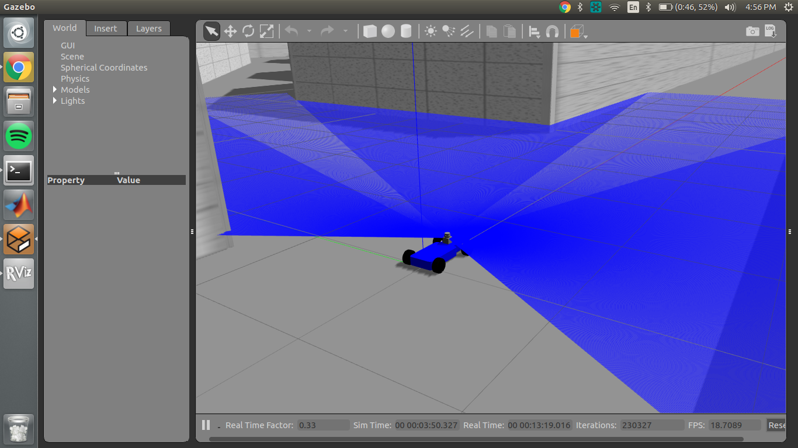
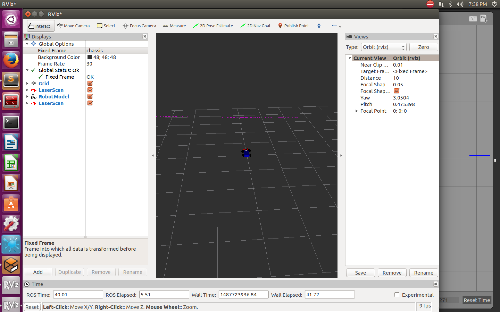
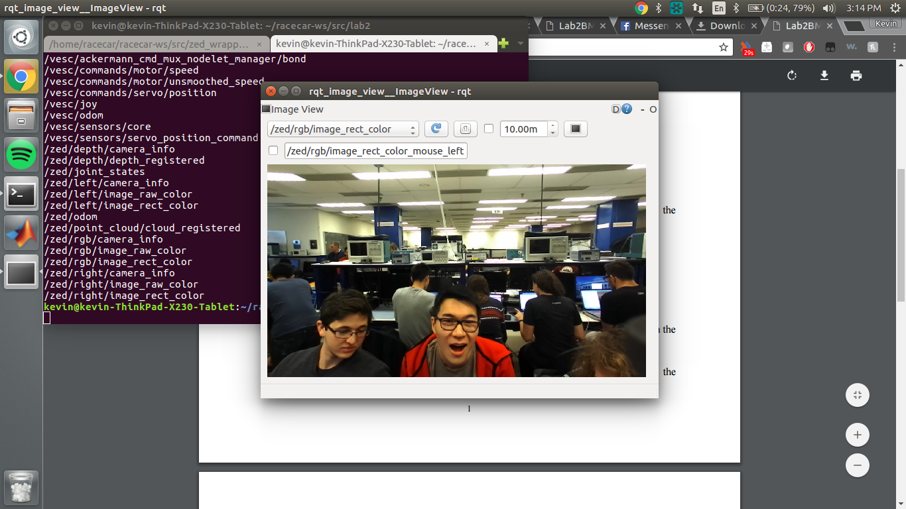
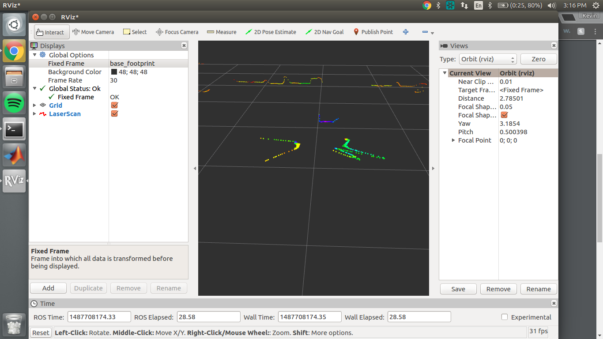

Lab 2 Report
Download as a PDFIntroduction (Caroline)
This lab project included two main sections. Lab 2A involved installation of the virtual machine workstation on team member computers and an overview to practice running existing ROS modules. This lab required use of command line to run and explore the TurtleSim ROS node. Lab 2B asked teams to set up their MIT-direct GitHub accounts, create a team repository, and a team website. Teams also became more familiar with RACECAR simulator by running Gazebo along with ROS to simulate the RACECAR model and taking sensor (LIDAR and Zed Camera) data.
Methodology
Controlling the Simulation (Katy)
The first task revolved around the simulation of a RACECAR with a LIDAR sensor in Gazebo. We started by experimenting with the simulation alone. We could directly publish messages to the ROS topic /vesc/ackermann_md_mux/input/teleop with information about the speed and angle of the car.
After becoming familiar with the simulation, we made it possible to control the simulated RACECAR via a USB controller. The code producing the output from the joystick originally did not communicate with the virtual car. We created a new launch file to remap the output of the joystick to the input of the simulation. This new file also launched the teleop.launch file required to tell Gazebo to listen to commands from the joystick.
Finally, we used RViz to see the laser scan data while we controlled the RACECAR with the joystick. Below are different images of what the car sees when it’s at different places in the map of the tunnels.
Collecting Sensor Data (Kevin and Josh)
After becoming familiar with the simulation, we started working on the real robot. We successfully viewed output streams from both the ZED camera and the LIDAR using the commands as described in the lab instructions. We originally had a hard time viewing these streams through the router’s wireless connection (we saw a 60% packet loss rate), but frame rate was improved when we used an ethernet cable to connect to the router. Below are screenshots from the ZED camera and the LIDAR outputs.
 We explored other output modes of the ZED including its depth map mode and got a sense of how accurately it estimates depth. Using the bag tool we were successfully able to record approximately 2GB of information to a .bag file.
Troubleshooting (Trevor)
Since the lab was intended to be relatively straightforward for the purpose of Linux/ROS familiarity, it allowed opportunities to troubleshoot directly and effectively on specific parts of the lab implementation.
Initially the joystick input commands were not registering in the RACECAR simulator, and the first error identified was that the dongle to connect the joystick to the computer running the Gazebo simulator did not match.
The next problem identified and addressed was a spelling mistake in the launch file. Because the launch file created was so short – only four lines of code, two of which were just to indicate that it was a launch file – it was difficult to understand why the joystick inputs were not remapping to the simulator inputs. Node conversation was checked on the rqt computational graph to understand which topics were active and connecting various nodes. An issue that arose with this method was that a spelling mistake in remapping did not raise an error, and rqt instead just created another topic with the misspelled identifier that did not connect messages between the intended nodes. Once this spelling error was found, the computational graph was again checked for accuracy, and the joystick was able to send commands to the RACECAR simulation.
Once we finally got to using the car, we started getting an error saying the config file was missing. In the end we realized that the config file on the car was outdated and we had to manually fetch an updated config file from the internet for the current software version. We hooked the car’s router to ethernet so it would receive an internet connection, and then SSHed into the car wirelessly to force it to download a new file. After successfully downloading the file we could read from the car's sensors.
Another issue that came up when taking data was that the wireless internet connection between the RC car and the VM was slow. It was unable to stream data from the ZED Camera to the computer, and instead displayed a grayscale blur. This issue was mitigated for the time being by utilizing a direct Ethernet connection instead of wireless connection.
Teamwork (Caroline and Sasha)
During the first communication forum, teams met together to discuss individual and team goals for the semester. Our team goals ranged from simply becoming more familiar with programming processes to more complex technical skills such as implementation of inference algorithms, exploring machine learning capabilities, or making flame decals for the RACECAR. This class period also allowed for members to briefly introduce themselves to the team and to discuss what prior experience they had with the topics of the class. Our team is composed of members with a very wide range of familiarity with robotics because of class/project/work experience, as well as a wide range in programming because there are team members of both Course 6 and Course 16.
Since the beginning of the course, the team has created various ways to organize the work for the coming semester, including a shared Dropbox, Google Drive, and GitHub organization. The team has put together a website in order to display the team biographies, information about the class and equipment, and the lab reports.
Already there has been a lot of teamwork and communication displayed by the members of the team by scheduling of meetings and work times, discussing lab processes, helping teammates with technical content as necessary, and troubleshooting.
Conclusion (Sasha)
All objectives of Lab 2 were completed by the team for increased familiarity with ROS modules and the RACECAR simulator. The program deliverables for this lab are the RACECAR simulator launch file and README.md file, and have both been uploaded to our lab2 repository. The current status of the website is that the “About” and “Biography” pages have been completed, with a plan to continue to add information regarding the class and work being done by the team so that it can be useful during the course for administrative staff as well as after completion of the course as a portfolio.